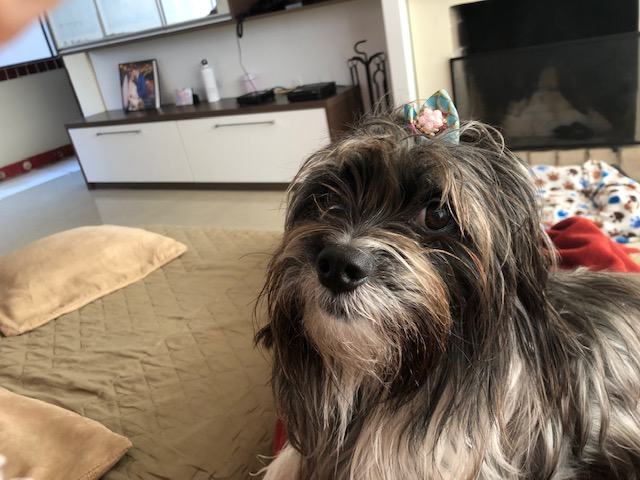
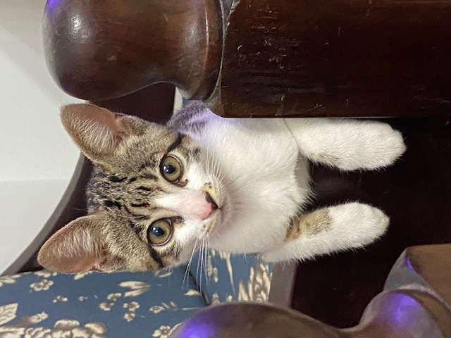

As Pets que fazem parte da minha vida
Um pequeno relato sobre as pets que fazer parte da minha história e da minha vida sob a ótica delas.
Lara
Olá pessoas e bichinhos! Meu nome é Lara. Esse nome é em homenagem a um filme que o vovô Ruben gosta muito - "Doutor Jivago". É o nome do amor da vida do protagonista do filme, assim como eu virei o amor da vida da mamãe :)
Sou uma mocinha muito ativa e muito sapeca. Adoro comer os chinelos da mamãe. "São uma delícia!"
Eu cheguei num momento muito triste na vida da mamãe... Ela tinha acabado de perder a cãopanheira dela: a Lily. Foi parceira da mamãe por 10 anos. Um dia a mamãe, ainda muito chateada com sua perda, estava mexendo nas suas mídias sociais e, quando de repente, EUzinha apareci na timeline dela, com aviso de que estava para adoção. Foi amor à primeira vista! Ela entrou em contato mais que rapidamente com a protetora com que eu estava abrigada. E... Feito! A protetora que já era conhecida da mamãe concordou com a adoção.
Agora tenho uma família muito legal. Tenho um mano cão - Marty - e uma mana gata - Amélie - que vai contar a história dela daqui a pouquinho. Passeio todos os dias com o mano Marty e o papai e brinco muito com a mana Amélie.Durmo bem agarradinha com a mamãe.
Essa é a minha história! Lambeijos a todos!
Amélie
Olá humanos e bichinhos! Meu nome é Amélie. Esse nome é porque a mamãe fala francês e é fã do filme "Le Fabuleux Destin d'Amélie Poulain" - O fabuloso destino de Amélie Poulain.
Um dia, quando a mamãe e o papai estavam planejando mudar de vida e discutindo sua mudança de uma cidade grande - Porto Alegre - para uma cidade do interior - Osório - a mamãe pensou:"Se vamos mudar de um apartamento para uma casa com pátio, a família pode aumentar! Vamos ter um gato?" O papai achou uma ótima ideia.
Com essa ideia em mente, mamãe foi para as suas mídias sociais procurar um gatinho para adotar. Mas o destino deu uma ajudinha. Antes de se mudar, mamãe mandou os manos cães para o banho na PetShop de costume e quando chegou lá, escutou uns miadinhos de gato e questinou a atendente:"Vocês estão dando banho em gatos hoje?" A atendente respondeu:"Não, recebemos um gatinho hoje que vamos encaminhar para adoção!" Mamãe pensou:"É a minha chance!" Ela pediu para me conhecer e foi amor à primeira vista!!! E assim ganhei minha família :)
Hoje, tenho uma casa com pátio para os meus banhos de sol. Adoro dar umas voltas aqui no condomínio e tirar uns cochilos na cadeira de trabalho da mamãe. Gosto muito de brincar a mana Lara e com meu vizinho gato Igo.
Essa é a minha história! Miaubeijos para todos!!
